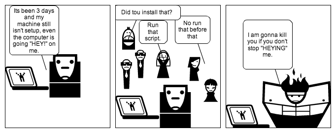

Vagrant VMs & Provisioning
Mihir

Agenda:
Problems
Virtualization
What is Vagrant
How Vagrant and Ansible
Vagrant Advantages
Common problems faced with team expansions and project ramp ups
Development Environment Setup
How easy is it to setup your project's development environment?
Development Environment Setup
Initial dip in team productivity
Development Environment Setup
Different operating systems and hardware
Development Environment Setup
Inconsistencies between procedures
Inconsistent Environments
The delta between development environment and the other environments used in the project.
Dependency Conflicts
Multiple codebases on same machine can cause dependency clashes or misdirection.
Virtualization and VirtualBox
- Full Virtualization
- Partial Virtualization
- Paravirtualization
Virtual Box
Virtual Box implements full Virtualization.
Vagrant
Vagrant is a wrapper over full virtualization implementing software, like VirtualBox.
Vagrant Boxes
Vagrant uses the .box format to package its Virtual Machines
Vagrant Machine
- vagrant box add {{ box-name }} {{ box-url }}
- vagrant init {{ box-name }}
- vagrant up
Vagrantfile
Vagrant managed VM's configuration and provisioning can be managed through the Vagrantfile.
Vagrant Provisioners
Vagrant allows you to plugin provisioners like Chef, Puppet etc.
Ansible
Ansible is another orchestration tool. It requires no client side agent installation.
Vagrant and Ansible
Vagrant provides a module for Ansible
Advantages of Vagrant
- Isolation
- Configuration Management
- Ease of distribution
Idea Scenario
Same Vagrant Boxes across the team, automated vagrant box provisioning and vagrant box version control.